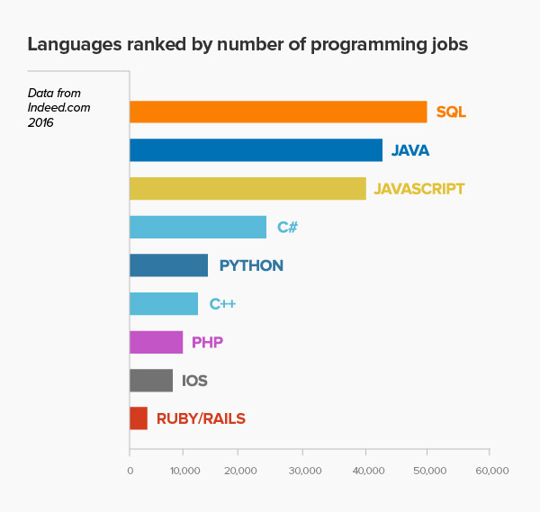
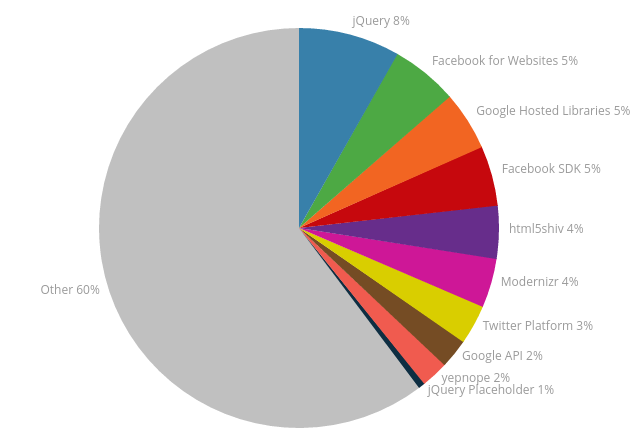

درباره پروژه¶
What is Javascript¶
JavaScript is a lightweight, interpreted programming language. It is designed for creating network-centric applications. It is complimentary to and integrated with Java. JavaScript is very easy to implement because it is integrated with HTML. It is open and cross-platform.
Why use javascript¶
Should be see picture:
 Why Study JavaScript¶
JavaScript is one of the 3 languages all web developers must learn:
- HTML to define the content of web pages
- CSS to specify the layout of web pages
- JavaScript to program the behavior of web pages
This tutorial is about JavaScript, and how JavaScript works with HTML and CSS.
See also
JavaScript and Java are completely different languages, both in concept and design.
Advantages¶
- Javascript is executed on the client side
This means that the code is executed on the user’s processor instead of the web server thus saving bandwidth and strain on the web server.
- Javascript is a relatively easy language
The Javascript language is relatively easy to learn and comprises of syntax that is close to English. It uses the DOM model that provides plenty of prewritten functionality to the various objects on pages making it a breeze to develop a script to solve a custom purpose.
- Javascript is relatively fast to the end user
As the code is executed on the user’s computer, results and processing is completed almost instantly depending on the task (tasks in javascript on web pages are usually simple so as to prevent being a memory hog) as it does not need to be processed in the site’s web server and sent back to the user consuming local as well as server bandwidth.
- Extended functionality to web pages
Third party add-ons like Greasemonkey enable Javascript developers to write snippets of Javascript which can execute on desired web pages to extend its functionality. If you use a website and require a certain feature to be included, you can write it yourself and use an add-on like Greasemonkey to implement it on the web page. JavaScript References
Disadvantages¶
- Security Issues
Javascript snippets, once appended onto web pages execute on client servers immediately and therefore can also be used to exploit the user’s system. While a certain restriction is set by modern web standards on browsers, malicious code can still be executed complying with the restrictions set.
- Javascript rendering varies
Different layout engines may render Javascript differently resulting in inconsistency in terms of functionality and interface. While the latest versions of javascript and rendering have been geared towards a universal standard, certain variations still exist. _Website Usability Consultants all over the world: http://www.nextprise.com/website-usability-consulting.php make a living on these differences, but it enrages thousands of developers on a daily basis.
JavaScript References¶
W3Schools maintains a complete JavaScript reference, including all HTML and browser objects.
The reference contains examples for all properties and methods, and is continuously updated according to the latest web standards.
JavaScript Quiz Test¶
Test your JavaScript skills at W3Schools!
How to use¶
- For Online Using Goto ➜
- https://www.tutorialspoint.com/try_javascript_online.php
For uses javascript with 2 method :¶
1-External link¶
- Code::
- <html>
<body>
<script src=”demo_script_src.js”> </script></body>
</html>
2-in Tag¶
- Code::
- <html>
<body>
- <script language=”javascript” type=”text/javascript”>
- <!–
- document.write(“Hello World!”)
//–>
</script>
</body>
</html>